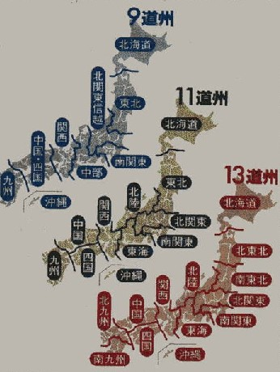

日本は中央集権国家。ところがそれをいいことに、役人・政治家のやりたい放題。これではいくら何でもまずかろうというので、論議されているのが道州制。日本を州単位に区分けして、権限を大幅に委譲したらどうかというもの。
もちろん行き着くところは人の問題、どのような制度のもとでも問題はおきる。しかし良かれと思われることは、推進したほうがいい。てなわけで、先日（06.3.1）、首相の諮問機関である地方制度審査会から、答申案が示された。
それによると、９道州案、11道州案、13道州案の３案（中日新聞３月１日号）があるという。

しかし記事をよく読むと、13道州案は付け足しで、実質は９道州案か11道州案のどちらからしい（２案しかないと二者択一になってしまうので、13道州案を付け足ししたらしい）。そこで13道州案は除外して、９道州案と11道州案をチェックしてみた。
11道州案では、中国と四国が分かれている。地域的なまとまりはあるにせよ、中国単独、あるいは四国単独では、九州単独ににくらべて経済力も人口もはるかに小さい。北陸にしても、新潟・富山・石川・福井の４県では、あまりにも小規模。というわけで、σ(-_-)は９道州案の方が広域的で良いと思った。
しかしその９道州案でも、北海道が単独になっている。北海道はたしかに広い。しかし高速道路で熊と鹿が追いかけっこ。すばらしい大自然だとは思うが、日本自然遺産を選定するわけじゃない....てなわけで、浅見案をつくってみた。コイズミクン、今後はこの方向で進めるように。(^-^)
|
北海道
|
北
部州 |
| |
|
|
青森
|
| 秋田 |
岩手 |
|
石川 |
|
山形 |
宮城 |
|
富山
|
新潟
|
福島 |
| 関西州 |
福井 |
岐阜 |
長野 |
群馬
|
栃木 |
茨城 |
関
東
州 |
|
山口
|
島根 |
鳥取 |
兵
庫 |
京都 |
滋賀
|
山梨
|
埼玉 |
長
崎 |
佐
賀 |
福岡
|
|
広島 |
岡山 |
大阪 |
奈良 |
三重 |
愛知 |
静岡 |
神奈川
|
東京 |
千葉 |
|
熊
本
|
大分
|
西部州 |
和歌山
|
中
部州 |
東京
州 |
南
部
州 |
宮崎 |
愛媛
|
香川
|
|
|
| 高知 |
徳島 |
|
鹿児島
|
|
|
沖縄
|
沖縄州 |
|
| 北部州 |
東京州 |
中部州 |
関西州 |
西部州 |
南部州 |
| 北海道 |
東京都 |
愛知 |
京都 |
山口 |
福岡 |
| 青森 |
関東州 |
岐阜 |
大阪 |
島根 |
大分 |
| 岩手 |
茨城 |
三重 |
奈良 |
鳥取 |
宮崎 |
| 秋田 |
栃木 |
静岡 |
滋賀 |
広島 |
長崎 |
| 宮城 |
群馬 |
長野 |
兵庫 |
岡山 |
佐賀 |
| 山形 |
埼玉 |
新潟 |
和歌山 |
愛媛 |
熊本 |
| 福島 |
山梨 |
富山 |
＊ |
香川 |
鹿児島 |
| 新潟 |
神奈川 |
石川 |
＊ |
高知 |
沖縄州 |
| ＊ |
千葉 |
福井 |
＊ |
徳島 |
沖縄 |
|